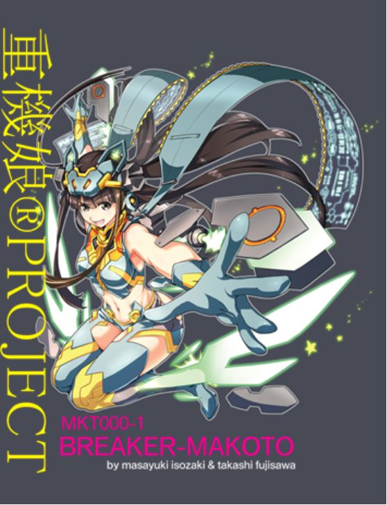

| 重機娘®ＰＲＯＪＥＣＴ ＢＲＥＡＫＥＲ-ＭＡＫＯＴＯ | |
| 磯崎誠之 | |
| JUUKIMUSUME PUROJYEKUTO (2015) | |

一
わたしの名前は「ＭＡＫＯＴＯ」
試作型MKT000-1〈〈プロトタイプ重機娘〉〉
神奈川県南足柄市にある磯崎重機工業株式会社（通称・磯崎重工）の日本が世界に誇るディファレントプロトコル理論を元にしたディファレントテクスチャデバイスが詰め込まれていま～す。
「なにそれ？」
ん～、話せば長い話になるんだけど、簡単に言えば【機械と人間が融合】って事なのかな？
説明が至らないかもだけど、お付き合いして頂くうちに理解出来ると思うよ♪
だからね、プロトタイプ重機娘と言ってもアンドロイドの様にすべてが機械ってわけじゃなくって、不思議なことに生身の部分もある。
なんでかな～と思うんだけど、人間っぽい方が親しみやすいのかな？
八頭身ボディに小さなお顔、長いサラサラの黒髪、クリクリお目目で、ちっこいお鼻、胸は小さめだけど、引き締まったウエストと形のイイお尻はモデル体型って言うのかな？製作者の好みがモロにって感じだけど、私も気に入っていま～す。
女の子だから甘いお菓子やケーキは大好き！お洒落にだって気を遣うよ、カワイイ物には目がないの、ボルト型の髪留め素敵でしょ☆
泣けば涙が出るし怒ったら鼻息だって荒くなる、感情もあるんだよ～。違う違う、よく言われるけど人工知能じゃないんだって。
私もそれとな～く聞くんだけど、いつもはぐらかされちゃう。企業秘密らしくて色々教えてくれないんだ。
窓際の廊下を歩きながら説明するＭＡＫＯＴＯがふいに足を止め、窓を開ける。冷たさの中に柔らかさのある風が吹き込み、長い黒髪が靡く。地上１５階建て、都心ではさほどの大きさでもない磯崎重工本社ビルは、ここ足柄平野では四方を見渡す事が出来る稀な建物だ。
私はこの澄み切った足柄平野が好き、緑に茂った山々、その山々に含有された途絶える事のない豊富な水資源によって豊かな自然が現在でも拡がっている。都会の建設ラッシュなんて嘘みたい。
すぅ～、と綺麗な息を吸い込み、しばし考えに耽る（私はどうして生まれたのかな？）
「かな」っていうのは私には記憶がないの...
当時、日本は長きにわたる一大政党政権に不満を募らせ、国民の支持を追い風に野党が一時的に政権を奪取、
国民による国民の為の政治、日本の活性化が行われるはずだった。
しかし、国家は一日にしてならず。
政権運営能力のない政策は国内経済おろか、諸外国相手の「外交」「貿易」に対しても無様な醜態を晒すことになる。
加え、団塊世代の大量退職による基幹技術者の消失。
生産社会時代の終焉を迎えた企業は苦肉の策として技術提供収益の道を進む。
世界各国からしてみれば条件この上なくよく、予想を上回る収益に困窮企業は喜んだ。
その一方で、脅威の足音は確実に迫っていた。
招かざる客「巨大パテントトロール」による特許強奪、海賊行為にも等しい彼等のやり口に、
鎖国状態の島国企業が太刀打ちできる訳もなく、まさかの基幹特許まで流出させてしまう始末。
経済は復調するどころか底なき底、奈落へと落ちていく。取り返しのつかない事態に日本全土が喘いだ。
いまでこそ日本を代表する企業になった磯崎重工であったが、以前は地方の小さな企業に過ぎなかった。
2050年には日本の人口は半分になる。
過疎化が進む当時の地方は先の経済状況ものしかかり都心以上により喘いでいた。
もれなく磯崎もその一人であった。
地方行政は既にシステムとしての機能を果たしておらず。もはや営めるレベルではなかった。
「俺にはこいつ（重機）しかない」
磯崎は、この状況を逆手にとる大胆な構想を展開、実行した。
地元廃校舎を譲りうけ、重機のオペレーター養成学校を展開、地方の広大な土地は重機の性能テスト、ＯＰ養成の場として申し分ない環境であった。
ともない重機機器関連の産業地域として地元経済は再び活気を取り戻した。
このビジネスモデルは地方経済救済だけでなく、日本の技術者不足を補う側面も持ち、瞬く間に支持され、磯崎重工を巨大企業にした。
磯崎重機工業高等専修学校（通称・磯崎工専）は普通科、建築科、電気科等通常の工業高校にある学科の他にＯＰ（オペレーター）科が存在する。ＯＰ科はエリートクラスからおちこぼれクラスまであり、入学希望者で不合格になる者はいない。
「何故？」
磯崎は全ての若者に輝く未来があり、その進むべく道を示し、歩ませるのが役割と使命感を持ったからだ。
磯崎の実娘である「真琴」は磯崎工専、本校を初めて卒業する第一期生である。容姿端麗、成績抜群、それでいて飾らない性格は誰からも好かれ、磯崎の建設現場まで赴いては作業着を纏い、父を手伝う姿は労働者人気も高かった。
何れは地方を、国家を担う人材になるであろうと地元市民は真琴を称え、磯崎も良き後継者が出来たと公言して憚らない自慢の娘だった。
二
建設現場に付き物の
「過去の遺物」
ちょっと珍しいモノが出現すると
「あ～でもない」
「こ～でもない」
といっては「歴史」を振りかざし重要物指定。
加え取材や調査目的で作業の邪魔を連日してくるマスコミや学会。
人類が過去に存在していたのだから、何かが出てくるのは当然だ。
磯崎は連日押し寄せるその群衆に、いい加減嫌気がさしていた。
「それにしてもデカいですね」
取材に来た記者か、調査団の誰かが口にしたソレは、漆黒の輸送タンカー程もアリ、
とても巨大で、そのまま発掘してどこかへ陸送できる代物ではなかった。
また綺麗な長方形をしており、運ぶにしても有効な手段が見つかっていなかった。
「そうそうにお引き取り願いたいものだ」
磯崎はマスコミや調査団、事態を招いたソレに皮肉を込めて言った
翌朝、作業手順を伝えるべく、ツールボックスミーティングを開始しようとすると、集合場所に作業員の姿がない。
「そういえば煩い調査団どもの姿も見えんな」
作業場で混乱を起こされてはと作業員と共に調査団にも流れを伝えるべき朝礼は恒例となっていた。今日は作業休止日だったか？カレンダーに目をやると金曜日、祝日でもない。
「むぅ」
耳を澄ませば採掘現場の方からガヤガヤと声が聞こえる
「いかん、寝過ごしたか...」
自身が寝坊したことで帳尻を合わせようとしたか、時計に目をやる事もなくやれやれと言った体で仮設事務所を出て、採掘現場へ向かった。
採掘現場は水を抜いた湖、と思ってもらえればイメージしやすい、釜場と呼ばれる採掘現場は地面を掘削し、建築資材である砕石などを採取しながら深度を下げていく。壁面に設置されたタラップを下り底地に降り立った磯崎の姿を見つけた社員が駆け寄ってくる
「社長、見てください！！」
何事かと社員が指差した方向へ目をやると昨日まであった筈の〈〈モノ〉〉がない
「！！！」
ばかな？タンカーほどもあろうモノが一晩で消えてしまうモノか！！
突如すっぽりとあいた釜場の底地に砂塵が吹き荒れ、数十人いた社員が掘削壁面へ数十メートル吹き飛ばされる。
磯崎は階段の手すりにしがみつき砂塵の奥に目を凝らす。
何かがいる、いやアルのか？
なんだ？状況を確認しようとした視線の先に
〈〈目〉〉があった
いや、正確には赤い光を見ただろうが
砂塵がおさまり姿を現したモノ
「なんてこった...」
タンカーほどもあったモノがそびえ立っている
高層ビルにも匹敵するソレは、まるで誰かが来るのを待っていたかのような登場だった。
「待っていた。と言うのか？」
三
「俺は夢を見ている」
ありがちなＳＦモノならば、好意的な、
自分にとって都合のいい解釈をするべきだ
未知との遭遇、この出会いが後の...
少しでも自分にとって有利な解釈をする。
人間とはそういう生き物だ。
もれず毎日騒ぎ立てるだけの調査団連中が
出現したモノへの接触を図るべく接近した。
様々な言語で近寄る彼等は単なる煩い集団だ。
「ヤレヤレ...」
次の瞬間
彼らは右から左に〈〈薙ぎ払われた〉〉
掘削壁面に衝突し、暫くノタウッテいたが、やがて動かなくなった
どうやら好意的な関係は構築できそうにない
同時に夢でなく現実であることを再認識させられた
ギギギギイッギ
「はは...、意志もあるって事かな？」
磯崎は苦笑しながらも作業員にタラップから地上へ避難するよう合図を送る
先程行動からすると、社員をみすみす逃がすようなことをする可能性は少ない
社員がタラップを駆け上り非難するまで凡そ三分。十メートル先には磯崎専用重機がある。
しかし搭乗するには長いタラップを登らなければならない。
「ちょっと遊んでもらおうか？」
思うや駆け出すと、何か脇を突風が過ぎる。
アクション映画さながらに間一髪で薙ぎ払われるのを躱した。
吹き飛ばされた形で重機に辿り着くとグワァァンと鈍い音をたて専用重機が傾く
磯崎を薙ぎ払うべく一撃がラッキーな状況を作りだした。
「ありがたい！ これならタラップを登らなくても搭乗できる」
傾いた重機の側面を十数メートル走り、素早く操縦席に乗り込むとダイアルを高速起動モードにし重機を立ち上がらせる。
フルスロットルで踏み込むと大型エンジンが咆哮を上げる。
ブロロロロロロロロロロ...
ガッ、ゴゴゴゴゴゴゴオオオオオオ
相手もデカイがこちらも中々
「世界最大重機ＢＷＥ（バケットホイールエクスカベータ）が相手してやろう」
バケットホイールエクスカベータ
長いアーム先端に、巨大な観覧車さながらの回転式巨大ホイールがついており、ホイールの外側に複数の掘削バケットがついている。
採掘したい場所にこのホイールを押しあてて回転させ、表土の鉱物を大量に削り取る。
ＢＷＥにはアームの中にベルトコンベアが通され、採掘された鉱物はこのベルトに送られる。またＢＷＥ単体では使用されず、粉砕、散布、堆積など複数の機器の組み合わせによって運用される。下部には無限軌道が装備されており、移動しながら連続的な採掘を可能にした点が大きな特徴である。 旧東ドイツ人民公社であったタクラフ社が製造した「Bagger 293」は人類史上最大の自走機械としてギネス世界記録にも登録されている。
八連クローラーを前進させ唯一にして最大の〈〈武器〉〉観覧車級の掘削歯車を高速回転し相手に叩きつける
「これでもくらいな！」
バギャ キィィィィィン
その姿はまるで高層ビルに突っ込む観覧車だ。
激しい衝突音と同時にソレはギェェェェエェ と悲鳴？を上げた
ダメージを確認する事もなく、磯崎は即座に操縦席を飛び下り地上を目指す
目的は作業員非難であり。格闘物語を後に伝えるではない
巨大なソレは向かってくる巨大重機の対応に追われ、磯崎どころでない
ギェェェェェェェェェェェ
ギュイン ガッガッガ ギュイン ガッガッガ ギュイン ガッガッガ
オイルの廻ってきた機体が推進力を増し、勢いよく歯車も廻り始めた。
激しい火花と衝突音
ギュイン ガッガッガ ギュイン ガッガッガ ギュイン ガッガッガ
その横を、スポーツ合宿でも採用しないであろう壁面階段の、尋常でない段数を一気に駆け上がり地上に到達した時、底で爆発が起こった。
「ざまあみろだ、エクスカベータの突撃なんて防げないだろうさ」
黙々と掘削現場から上がる黒煙、
なんだか良く分からなかったが咄嗟の行動が成せたのだろう
「社長、大丈夫ですか～！！」
先に避難させた作業員たちが駆け寄ってくる
「あぁ、無事だ。後の事は警察などに任せて...」
（黒煙？これはディーゼルガソリンが燃えてるんだ！！）
マズイ！！咄嗟に「逃げろ」と言いたかったのだろう。
瞬時に突風がふき声はかき消される。
同時に巨大な影が上空出現、巨大な何かが声ばかりでなくその場を制した。
仮設事務所を紙工作壊すがごとく緩々と潰し、漆黒の姿を現した。
ギュイエ ギュエ ギュエ
怒っている。
人間であればその表現が妥当なのだろう、体の中央部分がザックリと笹型に損壊している。BWEによってできた傷、かなりのダメージであることが確認できる。
（しかし、なぜ我々を始末しない？）
これだけの実力差があるのだ、重度のダメージを負っているとはいえ人間程度は容易に始末できるはずだ。〈〈薙ぎ払う〉〉これだけでいとも簡単に事は成る
笹型に損壊しているその奥に、光るモノ
再び目があった。今度は紫色の、悪意のある色だった
〈〈俺（私）の傷をみろ〉〉
物質か生物かは不明だが嫌なタイプのようだ
〈〈こんなにしやがって、いったいお前たちをどうしてやろうか？〉〉
周りを見渡すとスコップ、ツルハシの類しかない。
軍用兵器相手に竹槍で挑む様なものだ。状況は限りなく絶望に近い。
「すまない、自身はおろか従業員すら守れない。この脅威を後に伝える事も出来ない」
ヒーロー物なら、ココで正義の味方が登場し、状況を好転してくれる。
「ありえない」
「現実的でない」
そうは思っても、一縷の望みを繋ぎたい。
願いたい。
そんな絶望的な状況に変化が起こる。
「パパ～！！」
こちらに向かって駆け寄る真琴
そうだ、今日は真琴が来る日だった...
巨大な〈〈モノ〉〉の奥で何かがほくそ笑んだよう感じた
ヒュンッ
鋭い鎌鼬の様な音の後
駆けよる娘、
真琴の四肢が爆ぜた
予期せぬ事態に顔面から地面へ無様に激突する真琴
状況を好転させる都合のいい登場は無く、
更に追い打ちをかける悲惨な現実
衝動的に激高する作業員が手に獲物をとって巨大なモノに向かう
磯崎自身も大ハンマーを振るい突撃するも
巨大な〈〈モノ〉〉は
赤紫の光を放ちながら満足そうに緩々と上空へと消えていった
四
地方の、田舎の出来事である
あらぬ噂や他国陰謀説など面白おかしく取り上げられ
ひと時騒ぎ立てられた後、全ては【事故】で済まされた
その後、〈〈奴〉〉に動きがなかった事も結論付ける根拠となった
真琴は絶命の危機を脱したが、爆ぜた四肢は当時の医学ではどうにもならなかった
気丈にも健気に振る舞う真琴の姿が磯崎は余計に辛かった
地元ではタブーとされ、いつしか当事者以外は忘れていった
建設現場事故として処理された現場は封鎖され、磯崎も現場から外された
それでなくても問題を抱えたくない某所の判断だった。
「俺と家族が我慢すればいいことか...」
磯崎は事業を弟に委ね現役を退き、家族と共に過ごす事を決意するが
娘、真琴から言われた言葉は意外なものだった
「出来る人がソレをしないのは出来ない人に失礼ですよ」
そうだ、あれは事故じゃない。〈〈奴〉〉は実在し何かを企んでいる
傷が癒えたその時に再襲来するに違いない
再び使命に燃えた磯崎は対抗出来る体制を模索するが
自衛隊や警察の協力は取り巻く環境や社会問題から難しく
自身でどうにかするしかなかった
やはり重機か...
ＢＷＥによる攻撃は有効だった。
しかしＢＷＥは戦闘には向かない。
巨大ゆえ自走して現地に急行する事も出来ず。また鈍い。
出現場所にＢＷＥが常駐、熟練の優れたオペレーターの搭乗、
接近戦が大前提となってしまう。
そんなにこちらの思惑通りに都合よく相手が出現する確率は果てしなくゼロに近い
また熟練の優れたオペレーターの養成には長い年月を要する
「どうしたものか」
そんな時、医者より連絡が入る
「真琴さんが...」
どうしたというのだ？
朝はあんなに元気だったじゃないか！
無事でいてくれ
急行する車内でひたすら願う。
ただ無事でいてくれ！！
「ここは病院です！」
怒られるのは後にと病室へ急ぐ
個室の扉をバンッと開け
「真琴！！」
叫ぶ
「パパ？」
変わりのないいつもの声にへなへなとその場に座り込む
今日はエイプリールフールか？
冗談なら勘弁してくれ
なんともいえない脱力感で座り込む磯崎に対し
「磯崎さん。真琴さんを見てください」
だからどうした？
と言葉の先に目をやると、
両足で自立している娘の姿があった
「！？」
呑み込めない磯崎
「信じられない事ですが真琴さんの意志で義手義足が動くようです」
「どうして...」
医師の脇より
「すいません。実はもっと早くにお会いするべきだったのですが」
聞きなれない声、男は【甲賀の中川】と名乗った。
娘に起こった現象は、ディファレントプロトコル理論として中川が現在研究を進めているものだと言う。
純粋な日本人のうち、十万人に１人の確率で適正者が確認されているという。
身近な例を挙げて説明する中川は、例えばヨーヨーやけん玉を自在に操つる者、自転車やオートバイ等で曲芸する者など、その能力の高さによって扱える事、モノが違うと研究結果を説明した。
成る程、稀に物凄い仕事効率（パフォーマンス）を発揮して現場を喜ばすオペレーターがおり感心したがその類だろう。
そしてその者達を総称して「適応者」と言うのだと。
「ですので、真琴さんは【極めて稀な適応者である】と判断し、本日お伺いしたのです。」
どうしてそれを...と言いかけ、わざわざ中川が先に「甲賀」と名乗ったことを思い出し納得した。
娘が装着している義手義足も、巷に出回っているモノとは明らかに違っていた。
ところどころに歯車やバネが使われているそれらは、義手義足というよりはからくり人形に似ていた。
次の瞬間、磯崎の表情が強張る。
中川が〈〈奴〉〉の存在は古く甲賀に伝えられていると言ったからだ。
さっと間合いを詰め、中川の胸ぐらを掴んで詰め寄る
「奴は何だ？どうして現れた？目的は何だ？どこにいる？甲賀が造ったのか？」
言いたい事、聞きたい事が沢山ある。
それじゃ苦しくて話せないとジェスチャーする中川。
ハッとし謝る磯崎にお構いなくと正す。
ここではと中川に促され、真琴が無事であることを確認し場所を移した。
五
確証はないのだが、興味深い文献がありいろいろ解明されているにも関わらず現在でも謎の事柄があるという。
古い巻物のデータをモバイル上に表示させると、様々なからくり人形が並ぶ。
一般的なモノは今回省きますと、矢継ぎ早に画面を切り替え、あるところで画面が止まる
「こ、これは...」
「そうですね、【投石器】を改良したクレーン車でしょうか？」
中川が説明を加える
続け、こちらはどうですか？と切り替わった画面に驚く
「ブルトーザー...」
「攻城兵器【衝車】を改良したモノでしょうか？実際の用途は分かりませんがイメージが近くそれっぽく見えますよね？」
中川は続ける
あくまで推察ですが、と前置きし
「誰でも知っている話で」と中川は判りやすく例をあげた。
豊臣秀吉の美濃進攻の墨俣城、小田原北条攻めの石垣山城、九州攻めの益富城、これらはいずれも一夜城と呼ばれています。
出来上がってから木を切り倒しその姿を見せて驚かせた。
などあるが、丸太を使って築く砦でなく、【城】である。
墨俣城は川をうまく使ったとしても、
焼け落ちてしまった益富城は１夜にして修復、
石垣山城に至っては各国諸大名が集い１０万の大軍を滞在させ、
小田原北条氏を長く包囲し、降伏に追いやった。
容易に「成る程ね」と納得できる解明は今もってなされていない。
「人に非ず。の存在があっても不思議でないですよね」
確かに現代工法を用いても山頂に城を築くとなれば大ごとだ、一晩二晩でどうこうなるものでない
「記載こそないですが、巨大なからくり機械が存在していたのでは？と思っています」
更に中川は「時の権力者がその存在をしり活用していた」と仮説たてていると、
秀吉没後、家康が天下を握り、現在も発見されていない【徳川埋蔵金】
それだけの量であるならばどこかしらで情報漏えいしても仕方がない、
しかし２１世紀になっても手掛かりすらない。
「建設重機が存在していたと...」
磯崎が言いかけ
中川が、それはちょっと違うと続ける。
「秀吉が天下統一し、戦乱に終止符が打たれました。ではその前、戦国時代はどうだったのか？」
「戦闘兵器...」応える磯崎に
今度は御名答、と中川が手を叩く。
それでは戦乱で兵器だったものが太平の世で建設重機となったのか？
憶測の域ですがと
「元寇襲来を２度退けたり、織田信長の桶狭間合戦など圧倒的不利を覆した事例をあげた。
この資料にあるようなレベルでは到底覆せません。」
「もっと巨大なモノが存在していたと？」
「そう考えるのが妥当でしょう」
中川は今までの推察、考察、根拠、研究成果から紐解くキーを手に入れたと
「真琴さんが装着しているからくり四肢、あれは甲賀がつくりしものではありません」
「なんだって？」驚愕する磯崎に
大丈夫です。悪意があるモノや怪しい類ではないと話す。
代々中川家に伝わるモノであったがまつわるモノは何もなく、ただ幼少期に祖母が
「おててやあんよがのうなった曾爺さんが使ってたもんや」
その言葉から中川が興味を持ち、大切に研究とメンテナンスをしてきた。
テレビで建設現場から漆黒の棺ニュースが流れた頃から、からくり四肢が翡翠色に輝きだしたのだと、
そして
「淳（中川の名前）、神奈川いってひとだすけせぇ」
祖母に言われようやく真琴を探しだし、出会えたのだと。
「私がもっと早くにお会いできていれば真琴さんをあのような姿にしないで済んだかもしれない」
しかし、神奈川とだけ言われても日本有数の人口都市である。
神奈川県東部だけでも国内総人口の一割以上が存在いるのだ。
さすがの甲賀誇る情報部隊も困難を極めた。
「紐解くキーとは？」
それはもう仕方がない事だと磯崎が先を進めた
戦闘兵器として使われたとありますが、それ以前の記述は一切ないのです。
「成る程、それはおかしい」
「やはりそう思いますか？」
「兵器としてうまれ発展した機械ならば後世に伝えるのが道理」
「ではこう考えませんか？機械として生まれ兵器になった」
「なんだって？」
兵器として誕生し、活躍したモノを建設機械として発展させた話が、
どうして機械として誕生し兵器に発展した話になると言うのか？
「元寇襲来の鎌倉時代よりもっと遡りましょう」
「磯崎さんは世界で一番歴史があって古い国をご存知ですか？」
「それは日本でしょう。天皇制を採用し国家として一番古いのは日本です。」
「ほ～！流石ですね。アタリ！と申したいですが、後が余計でしたね。」
歴史的な国家としてはそれで正解だが、更に国造り、八百万の神々まで遡ると
中川の考えでは【大国主】こそ巨大機械＝重機を創造し国造りを成したのではないか？
重機の記述こそないが、ヤマトタケルが相模の国で国造りに荒ぶる神に野中で火攻めに合い天叢雲剣（あめのむらくものつるぎ）が独りでに鞘から抜けて草を薙ぎ払い、難を逃れたことにより草薙剣（くさなぎのつるぎ）と名付けられたとする記述から考察し、からくり武器（オートマタ）の存在が確認される根拠と言う。
相模から上総に渡る際も神の怒りを買い、走水の神と戦う、この戦いは熾烈を極め、ヤマトタケルは妻を失っている。
そのヤマトタケルがココ足柄の地で最後の討伐を終え、東征を完結した場所。
足柄神社はヤマトタケルに倒された白鹿の神を祭っていますし、足柄峠には万葉集でも知られる記念公園がありますよね？
そこで亡き妻を想い嘆息しました。
「そして、磯崎さん自身が【山神の末裔】ですよね」
「どうしてそれを！？」
「二宮金次郎さんと血縁関係にあると記事で書かれていました。そして磯崎さん自身も重機を自在に操れる資質を持っている。残念ながら適正者ではありませんでしたが... 娘、真琴さんに受け継がれたようです。１０万人に１人の確率、しかも直系の血脈が！！」
研究者の血がそうさせるのか、目の前にいる中川は味方なのか？敵なのか？冷静沈着礼節をわきまえる男が酷く興奮している。
「あのからくり四肢は磯崎さん、いや真琴さんに差し上げます。ですから明日、万葉公園に出向いてほしいのです。」
即時回答こそ避けたが、日に日に真琴がからくり四肢に慣れ、歩けるようになった頃、今は中川を信じようと真琴に話を持ちかけた。
久々に外を歩ける事を喜んだのか、「万葉公園にお散歩」という事で快諾した。
六
足柄山、そこは神奈川県の県境、東征を終えたヤマトタケルが吾妻と名付け亡き妻を想った地だ。
中川は甲賀の歴史ある代々の家柄と申したが、要は甲賀忍群棟梁の家系だ。
ほとんどの忍者が断絶したが、研究者と言う職業がその断絶を守っている。
中川、磯崎、真琴が到着した際には、現代情報機器が設置され、怪しげな陣が既に張られていたが、
磯崎重工による「安全✚第一」のネットが四方に張られ、どこからみても工事現場のそれだった。
磯崎、真琴は中川の説明を受けながら文字通りの散歩を愉しむ。
そういえば娘と散歩をするなどいつ以来だろうか？
アノ事さえなかった事にすれば十分幸せかもしれない。
満面の笑みで微笑んでくれる娘、短い時間ではあるが中川は懸命に尽くしてくれている。
金銭でなく、志で動く者が、現代で果たして何人いるだろうか？
代々の名家の出身だからか？礼節弁えた好青年でもある。
磯崎は二人が一緒になってくれたならと、父親の心境だった。
「ここに霊気の地脈があります。」
中川が説明する場所に近づくと、真琴の装着しているからくり四肢の翡翠色が輝きを増す。
「やはりここか」
ひとり納得する中川
散歩はここまでと中川は配下の者に準備をさせる。
そしてアタッシュケースから何やら取出し、真琴に手渡した。
「真琴さん、このヘッドギアを付けてください」
覗いてみるスコープを想像してもらえば確かだろう。
ウィンタースポーツのゴーグル程度の大きさか、
このヘッドギアは思念を増幅させ、
見えない物を見る事が出来ると言う。
見ると表現すると誤解が生じるが、
実際に「見る」事は出来ない。
脳神経の電気信号として解析、データを元にして画像に起こせるのだという。
撮影したモノを添付して、受信側の端末で見れる。
そう解釈してもらえば妥当だろう。
技術はそれと変わらないという。
中川自身、もう何度も使用して様々な研究成果を実績として残しているという。
「パパ...」
自由に動かせる手足を再び与えてくれた人として真琴は中川に感謝していたが、
どこかで恩返しをしたいと思う一方、時折見せる【研究者の目】だけは苦手だった。
「真琴さん、怖がらなくて大丈夫です。３Ｄスコープ、そんな感じで」
真琴はミニバン後席に１座だけある豪華なリクライニングに腰掛け、
中川が脇の端末を操作する。
前席後方に設けられたモニターを仁王立ちで見据える磯崎、
椅子が用意されているのだが、とても座る気分でない。
青色の画面をずっと見据えた。
からくり四肢が反応を示した場所は、
ヤマトタケルが立ったとされる場所だった。
そこに置かれた端末を中心に、
８帖ほどのスペースに描かれた五星陣、
その五つの先に術者がそれぞれ座り、
中川の合図とともに何やら唱え始めた
途端、其々に意味があるのだろうが、
航空計器さながらの数十の指針が動き出す...
「真琴さん、それではお願いしますね。」
コクッと小さく頷くと、
背もたれが倒れはじめ、
眠るように意識が誘われていった。
七
「ここはどこ？」
中川さんに言われたように恐怖などはない
空を飛びながら地上を見ている。そんな体感ゲームのようだ
暫く空を飛んでいると
ワーと言う喊声と共に大勢が城に攻めたてているところがある
どうやら戦国時代合戦の場のようだ
戦国時代の合戦と言っても当時の人口はそれほど多くなく
実に三万人と言ってもコンサートやスポーツ観戦の客数程度である。
散発的な戦いが行われているだけだ。
「あれはなに？」
そんな中、攻めたてる人に混じって動いている
大きさは自動車くらいかな？
「なんだろう？」真琴が思うと
面白い、見たいと思ったものがズームアップする
「なにあれ？」
四角いモノだ
もう少しズームアップすると
四角いモノが何かを運んでいる。
合戦時、刃こぼれなどで切れ味が悪くなるため
替えを用意し、運ばれるのは知られている。
大概は水の入った桶に、抜き身が入れられている。
「なんだろう？こんもり積まれてる」
どうやら土砂の様だ
四角いモノの上に土砂が乗っている
「お城を攻めるのに土砂を運ぶの？」
...！！
私はこの場面を知っている。もちろん実際に見た事はないけれど
歴史的に有名な「大阪冬の陣」だ。
そんな事を思っているうちに先程の四角が今度は自軍に戻っていく
「どういうこと？」
モニターを見据える磯崎と中川
「この時代にダンプカーだと？？」
大阪城の堀は深く広い、難攻不落、世界最大の要害と言われた堀は
秀吉亡き後の家康を悩ませた。
「これは凄い！」
中川の目が研究者のそれと変わる
「これなら数日で埋められてしまいますね。豊臣が和議に応じたのも頷けます。」
「ここはもうこれでいい」
車内から中川が指示を出すと術者が奇声を発した
真琴の視界が変わる
ただ広大な景色がどこまでも広がる
大自然
「私はこういう世界が好き」
真琴は地上に【降り立った】
「いけない！！」中川が発する
「どうした？」尋ねる磯崎に
「このシステムはあくまでバーチャルなんです。
垣間見る事で当時者でない傍観者でいられるのです。
しかし、真琴さんは接触してしまった。」
「だからどうだと言うのだ？」
「分からない...」
中川の目が定まっていない予想外の出来事で困惑しているようだ
真琴は暫く歩いた。カラクリ四肢で歩いても地面の感触は伝わってこなかったが
この大地は足裏にしっかりと土の反発力を伝えてくれる
真琴は久しぶりの感触に歓喜した
「まるで本当の手足のよう」
そう思った瞬間、誰かの視線を感じ振り向くと
「何をしている？」
長い黒髪の気品ある女性が立っていた
「え？」
おかしい、私の周りには誰もいなかったはず
気品ある女性は真琴の四肢をみて
「何故ここにおられます？このような視察は我々に任せてお戻り下さい」
ささっと合図をすると天空に亀裂が走り〈〈奴〉〉現れた
いや、正確には別次元から質量を無視して登場といた所か
真琴の顔が恐怖に慄く
「どうされました？貴方様専用のアーティファクトではありませんか？」
「「ばかな！！」」
声を荒げた磯崎の音声が真琴を通じて女に届く
「覗いていた奴がいたな！！」
女の右手が光ると同時に現代でいうモーターグレーターが現れる
モーターグレーター
整地用途に使用される自走式の建設重機。
荒地を大きなブレード（直訳では刀）と呼ばれる地ならし用の機器を引き摺って整地する。
用途によってリッパ―（熊の爪）やスカリファイヤー（破砕機）に換装できる。
「インサート！！」
発すると同時に女とモーターグレーターが融合する
手の甲から肘にかけて備わったグレーターの刃がキラリと反射する
状況がまずい、それは１０人いれば１０人が判る事だった
「パパ」真琴が発すると
「パパ？」女が怪訝な顔をする
女は真琴を足先から頭まで舐めるように見直すと
「はは～ん」
一人で納得したような態度をとった
パチン
刹那、光が煌めくと時空が切断された
それは引き裂かれた写真のようだった
「空間ごと...切断したというのか...」
外に目をやると設置されていた機器と五星の陣が断ち切られていた
術者は全員が倒れていた
「真琴は？真琴はどうなった？」
中川が息も絶え絶えに
「真琴さんは別に移しました」
私の合図が若干早かったようです
「どこへ移した？」
「すいません、咄嗟の事で...」
モニターはザーと言う画面を映し出しているだけだった
「急いで真琴さんを戻します」
新しく端末機器をセットし陣を張りなおす作業が続く
「もたもたするな！急げ」
磯崎は声を張り上げる事で苛立ちを誤魔化し、怒る事しか出来なかった。
八
「ここはどこ？」
真琴は暗闇を進む
こういった時は【動かない事】が常識だが、真琴が備える四肢が翡翠色に辺りを照らす
しかし、その他は暗い、ただ暗い、閉塞的な空間なのだろうか空気の流れがない
そうすると前方に小さいながら光が見える
しかし、暗くてよく見えない
「遠くにあるの？」
おかしい、見たいものはズームしてくれるんじゃないの？
目を凝らすと
違う、遠くにあるのではなく、光が【赤い】のだ
目が慣れてくる
赤い光の前に、何かある
数歩の距離だ
「なんだ、意外に近いんだ」
一方、現実世界では最悪の事態となった
足柄山を突如暗闇が覆う
「どうした？」
車内から顔を出すと上空に奴がいた
「どうしてこのタイミングで...」
「磯崎さん、真琴さん戻します」
準備が整ったようだ
「真琴さん、強くこの場をイメージして戻って下さい」
赤い光の前には座席があるようだった
誰かが座っている？？
真琴が一歩、歩み寄る
「ダメだ真琴さん、これ以上はフォローしきれない。戻れなくなるぞ」
中川が声を荒げる
椅子に座っているモノがほくそ笑んだ（ように見えた）
次元のフィールドが歪みはじめ、現実世界との通信が途絶えとだえになる
「ダ... 琴さん... フォロー... ない... なるぞ」
強引に引き戻される感覚に抗い、一歩を踏み出す決意をした。
「もう少しで何かが解りそうなの！」
そこに誰かいるの？
赤い光前の椅子が回転し、真琴の方を向くのと
真琴がもう一歩、歩み寄ろうとしたのは同時だった
「も... もう... 少しで... 謎... 解け そうなの... 」
その声を最後に全ての計器がダウンした。
「真琴！戻れ！！今、全てを知る必要はないんだ」
父の声は、届いていたのか...
九
私は、中川の申し出を受けて正解だったのだろうか？
娘、真琴はもうこの世にいない。
ヘッドギアを外し笑顔を見せた真琴に磯崎はじめ中川も一同安堵したが
数日後、奈落へと落とされた
「記憶障害」と「体質変化」
日常生活レベルには問題なく、学問や学識は健在だが、それ以外の事は記憶にない
自分が誰か、磯崎との関係も消えた
そして弊害か、老化しない肉体を手に入れ、四肢は融合してしまった。
結局、真琴の思念は戻らず。謎も解明出来なかった。
ただひとつ、その存在は事実確証となった。
現在中川は、磯崎重工技術部門最高責任者としてディファレントプロトコル理論を突き詰めている。
インサーターの発掘、重機娘と呼応する建設重機の開発を取り仕切っている。
既に活躍中のショベルやロードローラー、ラフター等、確実に世に送り出し成果を上げている。
一方で、からくり四肢の構造は産業用ロボットの構成に似ており
マニュピレータやアクチュエータ、センサコントローラにより格段に進歩した。
MKT000-1 プロトタイプ重機娘によって実用実験も済まされ、
その高い技術力は世界認知され、求められる事になった。
だが、男たちは金銭には靡かず、ひたすら技術力を磨いた。まるで何かに憑りつかれたように...
磯崎は磯崎重工本社ビルの窓から夕陽に焼ける足柄平野を眺めていた。
この風景はかつて愛娘が愛したものだ。【真琴】このキーワードはもう何年も封印されていて磯崎自身も決して口にしない。
「しゃっちょうさ～ん、元気出してくださいよ～落ち込んでますぅ？」
満面の笑みで磯崎に話しかけてくる真琴...いやＭＡＫＯＴＯに
「バカを言え、俺が落ち込んでどうする」
「そっですよね～ 人生いろいろありますが、出来る人がそれをしないと出来ない人に失礼ですよ♪」
ハッとした磯崎はＭＡＫＯＴＯを抱き寄せ、キツク抱いた
「いたい いたい しゃっちょうさ～ん いたいですぅ」
生身の部分は痛いんですよとプンプンだ
それはすまん、離れると
「あれ？泣いてます？」
「阿呆、俺は極度の花粉症なんだよ あ～はくしょん はくしょん 」
エピローグ
ＭＫＴ000-1 ＢＲＥＡＫＥＲ-ＭＡＫＯＴＯ最後までお読み頂き感謝申し上げます。
重機娘®ＰＲＯＪＥＣＴってそもそもなに？元々は自身の講演原稿である「プレミア世代の君たちに贈るオンリーワンでナンバーワン」凡人な人でも努力で日本一に成れるよ！そんな話なんですが、中々硬い話は聞いてもらえない。であれば擬人化が流行っているらしい、なら可愛い女の子をイラストレーターさんに書いてもらおうと「痛コブラ」で著名な藤沢孝さんにキャラをお願いしました。（最初はやたら熱いファンが毎回何か送ってくる認識だったんだって）
講演は若い人に聞いて貰えない、聞いて貰えないんだよ。どうしよう？ラノベなら読んで貰えるんじゃないか？文学になるとまた難しいので、キーワードだけ残せればなぁと、初挑戦致しました。
書いていくうちに、自己啓発本なんか巷に溢れているじゃない！！破り捨てる。
もっと社会貢献を！！
じゃぁ団塊の世代が大量退職してしまい、技術者不足、それならば建設重機を擬人化してしまえ、ショベルとかクレーンとか子供ながらに一度はカッコいいと思ったでしょ？
歌にしたら聞いて貰えるかな？コミックなら読んで貰える？もういっそアニメにしてしまえ！！！（２０１５年内に出来たら最高♪）
いま、日本は技術者不足に悩んでいます。建設業界は確かにきついかもしれない、汚いかもしれない。でも沢山の人々が関わって、形になる物造りは、完成した時に替え難い達成感があります。共に事を成す仲間の存在を感じられます。
汗を掻くことは汚い事じゃない、我武者羅に何かに打ち込む事は恥ずかしい事じゃない。
重機娘®ＰＲＯＪＥＣＴは現代における何とも言えないこの社会・環境に対する我々の挑戦でもあります。
読んで頂いたキッカケから建設業界に興味を持って頂いたり、資格取得をしてみよう、仲間を集めてみよう、「自分にも何か出来るのではないか？」思って頂ければ幸いです。
大人な大人がいないと言われる現代で、先輩として頑張ろうって人もいるんだぜ？
素人なので文章的にどうとか言わない！想いを綴ったのだから！！人気が出れば続きを書くかなぁ、人気が無くても書くけどさ（しばらく落ち込む）だから☆1はやめてフリじゃないよ、せめて☆２で、☆５が多かったら来月続編出せるようにします。（努力目標）
重機娘®ＰＲＯＪＥＣＴ代表：磯崎誠之（原作・原案・著者）イラスト：藤沢孝
平成２７年６月５日 発行
発行者：重機娘®ＰＲＯＪＥＣＴ
250-0103神奈川県南足柄市壗下1008-2
https://ja-jp.facebook.com/pages/重機娘PROJECT/1517792831787603